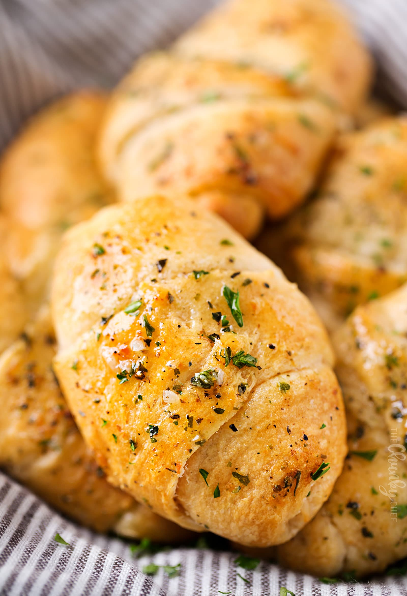

Buttery Garlic Cheese Bombs are essentially just crescent rolls that are stuffed with cheese and then
brushed with a homemade garlic butter
-
2 eight ounce (8oz.) Cans of Refrigerated Crescent Rolls
-
8 Pieces of Mozzarella String Cheese (halved across to make two short sticks)
-
6 tablespoons Salted Butter, melted
-
4-5 Cloves of Garlic, grated or finely minced
-
1.5 teaspoons of Italian Seasoning
-
1 teaspoon of Dried Parsley
-
1/2 teaspoon of Dried Basil
-
Preheat oven to 375 degrees Fahrenheit and line a rimmed baking sheet with parchment paper then set aside.
-
In a small bowl, combine melted butter with Italian seasoning, garlic, parsley, and basil.
-
Unroll crescent rolls and separate into triangles. Brush with garlic butter mixture, from Step 2,
reserving some to brush on tops of assembled rolls. Place halved string cheese at widest end, and roll up
(tucking in the edges to seal).
-
Brush tops with more garlic butter. Bake for 10-12 minutes, until lightly golden brown.
-
Finally, enjoy!
This recipe was sourced from The Chunky Chef.
The image was also sourced from The Chunky Chef.